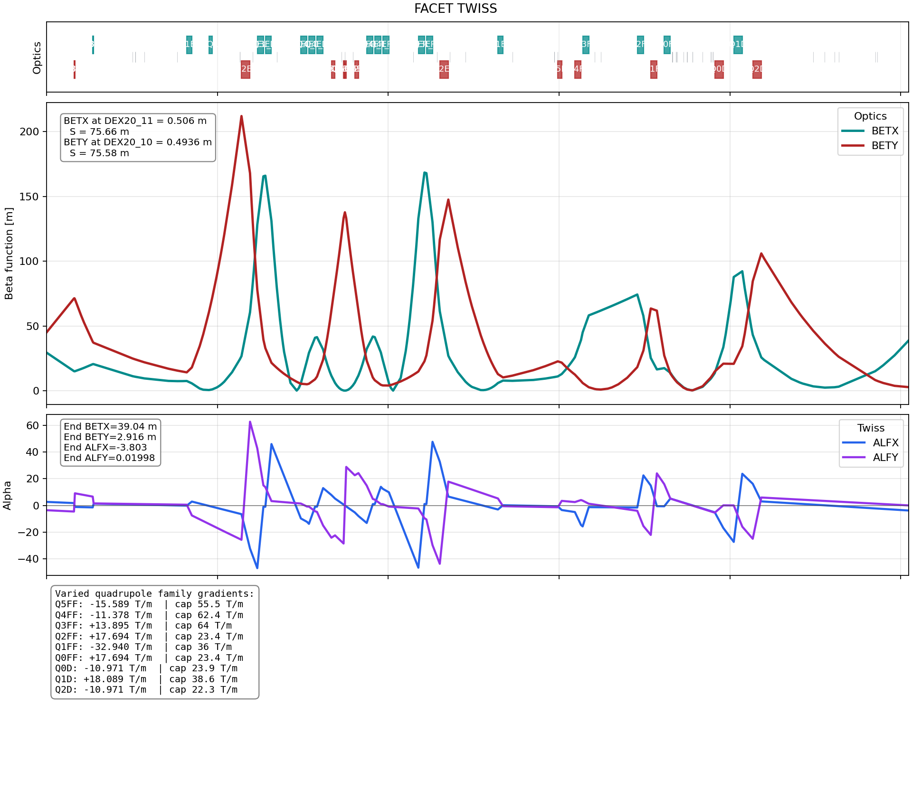
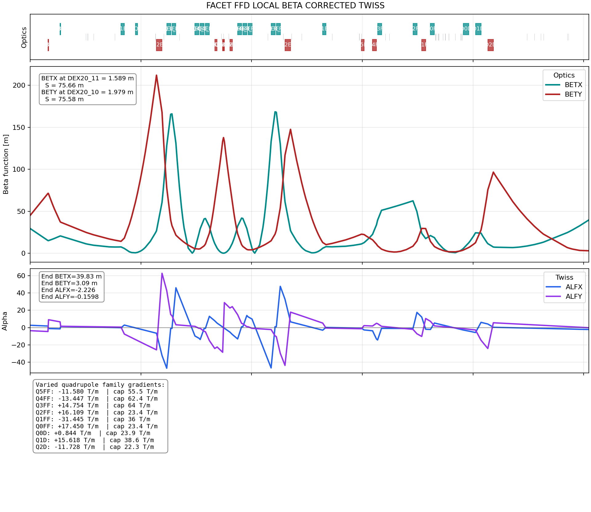

FACET FF/D Local Beta Optimization Summary
The most recent optimization started from the untouched original FACET lattice and varied only the final-focus
and downstream quadrupole families Q5FF through Q0FF plus Q0D,
Q1D, and Q2D. The goal was to make BETX larger at
DEX20_11 and BETY larger at DEX20_10, while keeping the final endpoint
beta functions reasonably close to the original optics.
The optimized lattice was written separately as facet_ffd_local_beta_corrected.madx. The original
source lattice flatGoldenLattice_line4_stub_10gev.madx was not modified.
Optimization Approach
A sensitivity scan showed that the upstream FF quadrupoles can strongly increase the local beta functions at the
two requested diagnostic locations, but they also perturb the endpoint beta functions. The final solution used the
FF quadrupoles to raise the local beta values, then used the downstream Q0D, Q1D, and
Q2D strengths to pull the endpoint beta values back close to the baseline.
Polarity flips were allowed, and all gradients were constrained by the requested absolute maximum field gradients. MAD-X finished normally for the optimized deck with zero warnings.
Optics Result
| Location | Quantity | Original | Optimized | Change |
|---|---|---|---|---|
DEX20_11 |
BETX |
0.505953 m | 1.588902 m | +1.082949 m |
DEX20_10 |
BETY |
0.493554 m | 1.979472 m | +1.485918 m |
LAT$END |
BETX |
39.037563 m | 39.831603 m | +0.794040 m |
LAT$END |
BETY |
2.915517 m | 3.089825 m | +0.174308 m |
LAT$END |
ALFX |
-3.803267 | -2.225680 | +1.577587 |
LAT$END |
ALFY |
0.019984 | -0.159814 | -0.179798 |
Final Quadrupole Gradients
| Family | Requested |Bmax| | Original Gradient | Optimized Gradient | Within Limit |
|---|---|---|---|---|
Q5FF | 55.5435 T/m | -15.588683 T/m | -11.579664 T/m | Yes |
Q4FF | 62.4475 T/m | -11.378285 T/m | -13.447085 T/m | Yes |
Q3FF | 63.9877 T/m | 13.895341 T/m | 14.753656 T/m | Yes |
Q2FF | 23.3828 T/m | 17.693891 T/m | 16.109460 T/m | Yes |
Q1FF | 35.9843 T/m | -32.939625 T/m | -31.445191 T/m | Yes |
Q0FF | 23.3828 T/m | 17.694311 T/m | 17.450307 T/m | Yes |
Q0D | 23.9000 T/m | -10.971116 T/m | 0.843986 T/m | Yes |
Q1D | 38.6000 T/m | 18.089030 T/m | 15.617535 T/m | Yes |
Q2D | 22.3000 T/m | -10.971116 T/m | -11.728036 T/m | Yes |
The signs above are the final gradient polarities used in MAD-X. The constraints were applied as absolute gradient limits because polarity reversal was allowed.
Generated Files
| File | Purpose |
|---|---|
facet_ffd_local_beta_corrected.madx |
Optimized MAD-X lattice deck. |
facet_ffd_local_beta_corrected_twiss.tfs |
TWISS output for the optimized lattice. |
facet_ffd_local_beta_corrected_plot.png |
Optimized lattice plot with survey, beta, alpha, endpoint values, and quadrupole gradients. |
facet_original_ffd_comparison_plot.png |
Original lattice plot using the same plotting format for direct comparison. |
Plots

